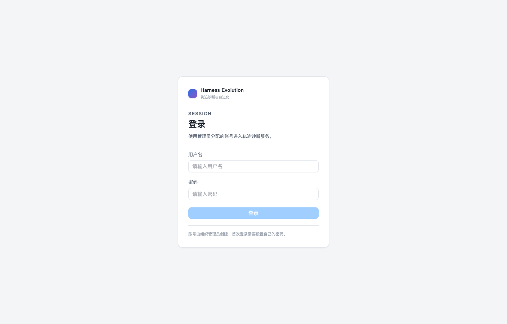
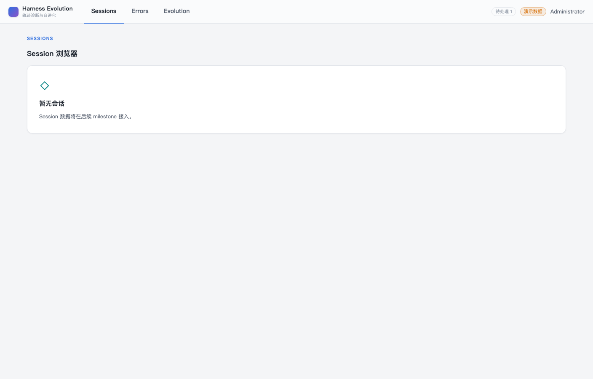
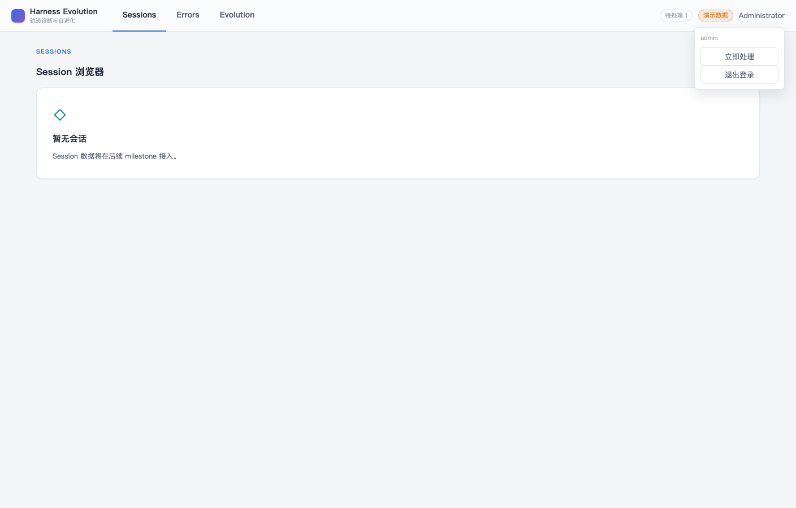
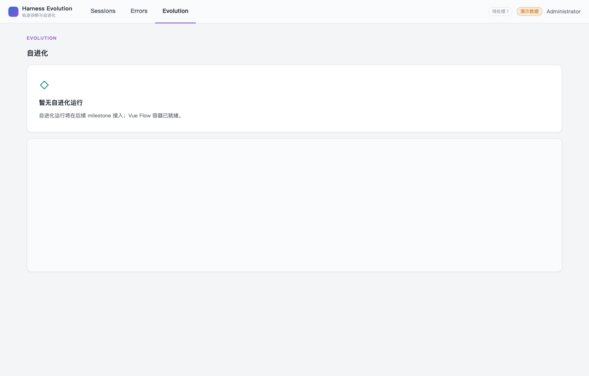

- Issue
- #40 · M2 upstream contract
- PR
- #100
- Commit
- ab919a2
- Runtime
- FastAPI + SQLite + Vite + headless Chrome
- Upstream
- local mock only · no external network
Harness Evolution · PR #100 · rerun
M2-08 上游轨迹契约与 Pull 冒烟报告（修复后）
在修复环境变量主版本解析后重新验证上游契约、mock pull、分页、重试、逐会话隔离、版本拒绝、payload 幂等、权限、脱敏和亮色原型壳。15 项自动化/运行时检查通过，无产品缺陷；原生 Computer Use 仍受 macOS 锁屏阻塞，浏览器证据来自真实 headless Chrome/CDP，未冒充实机 CUA。
16检查项
15通过或已修复
0未解决产品缺陷
1CUA 环境阻塞
0意外控制台日志
Environment and Artifact
2026-10-26 · macOS · Chrome CDP · loopback onlyScenario Matrix
1 fixed · 14 pass · 1 info| # | 场景 | 结果 | 观测 | 证据 |
|---|---|---|---|---|
| 01 | 环境变量主版本启动 | FIXED | HE_UPSTREAM_API_MAJOR=1 在环境变量层规范化为整数，真实 FastAPI lifespan 启动成功。 | focused startup regression 25 contract tests passed |
| 02 | 非法主版本拒绝 | PASS | 字符串 2 与非数字值均在启动前以 ValidationError 拒绝。 | environment validation regression |
| 03 | Package 身份映射 | PASS | main 映射 root session id，child 保留 agentId；错 session、child 冒用 root 均拒绝。 | m2-08 focused contract tests |
| 04 | Cursor 分页 | PASS | 两页 mock cursor 正常拉取，重复 cursor 与页数上限受保护。 | MockTransport pagination tests |
| 05 | 重复 pull 零副作用 | PASS | 相同 pull 返回 0 imported / 2 skipped，payload/source 与运行态字段保持稳定。 | repeat pull regression |
| 06 | 429/5xx 重试 | PASS | 仅 429/5xx/超时/传输类错误重试三次；4xx 与版本错误不重试。 | HTTP retry matrix |
| 07 | 404 逐会话隔离 | PASS | 单会话失败生成脱敏 issue，后续会话继续成功，不写错误 payload。 | fetch_many isolation tests pull audit |
| 08 | 坏 gzip 隔离 | PASS | DecodingError 被限制在对应会话，后续正常会话继续处理。 | decode isolation regression |
| 09 | 错误 session 包拒绝 | PASS | 请求 A 返回 B 的 package 以 UPSTREAM_INVALID_RESPONSE 拒绝，零写入。 | wrong-session response test |
| 10 | 严格 wire 与身份 Schema | PASS | snake_case、字符串布尔、非法/无时区时间、倒序区间、双 main、main agentId、sub null、child root 均拒绝。 | Pydantic strict tests Ajv 2020 negative fixtures |
| 11 | 版本不兼容 fatal | PASS | 响应头 major 不兼容时 pull job 失败，版本校验前无 payload 写入。 | fatal version regression zero-write assertions |
| 12 | Pull 权限与 selector | PASS | 未登录 401、member 403；sessionIds/window 互斥；未配置 409 UPSTREAM_NOT_AVAILABLE。 | API permission matrix |
| 13 | 来源与游标 | PASS | 上游 payload/source 使用 http_api，hash/line count 派生，未处理 source 不预标记。 | SQLite persistence tests |
| 14 | 错误脱敏 | PASS | API/日志不返回上游 token、URL 凭据、gzip 原文、本地绝对路径或轨迹正文。 | sanitized status and caplog tests |
| 15 | 原型壳与响应式 | PASS | 亮色 56px Harness Evolution 顶栏不变；1408/390 无横向溢出，正常路径控制台无异常。 | 真实 Chrome E2E 4/4 stable UI screenshots |
| 16 | 原生 Computer Use 实机截图 | BLOCKED | macOS 锁屏阻止 @oai/sky 取得应用状态；未绕过锁屏，使用真实 headless Chrome/CDP 证据。 | Computer Use: Mac is locked Chrome CDP screenshots |
Issues and Observations
No defects foundNo defects were found.
Evidence
6 screenshots





Automated Coverage Assessment
5 areas reviewed| 区域 | 覆盖 | 结论 | 建议 |
|---|---|---|---|
| Upstream contract | Pydantic + canonical JSON Schema + Ajv | 字段、身份、日期、版本和有序窗口约束由真实负例验证。 | 保留 mock-only CI 与 drift gate。 |
| HTTP client | MockTransport + focused integration | 分页、重试、版本、解码和逐会话隔离均通过。 | M6 接真实上游时沿用同一契约。 |
| Pull persistence | 真实 FastAPI + 临时 SQLite tests | http_api 来源、幂等、运行态保留和错误审计通过。 | CI MySQL marked contract 继续执行。 |
| UI | 真实 Chrome E2E 1408/390 + stable screenshots | 本 issue 无前端 diff，亮色原型壳未回退。 | 领域页面仍由后续 M3/M4/M5 issue 实现。 |
| Native Computer Use | Blocked by locked macOS | 未把 CDP 证据伪装为原生 CUA。 | 设备解锁后可补采实机截图。 |
Conclusion
通过 · 无未解决产品缺陷修复后的环境变量启动、上游契约、mock pull、隔离、幂等、权限和原型 UI 均通过；原生 CUA 仍受外部锁屏限制。
- HE_UPSTREAM_API_MAJOR=1 已由真实环境回归覆盖。
- 非法主版本仍在启动前拒绝。
- 未访问真实上游，未声称生产接入完成。
证据源：修复后 focused/mock 测试、真实 Chrome/CDP、脱敏 HTTP/SQLite 结果与稳定 UI 截图。生成 HTML 不应手改。